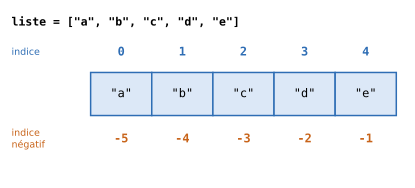
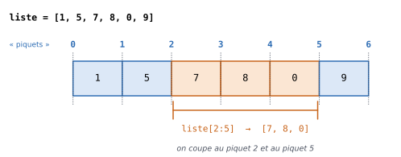
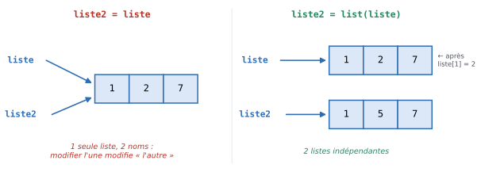

5. Les listes#
Objectifs du chapitre
À la fin de ce chapitre, vous saurez :
créer une liste et accéder à ses éléments grâce à leurs indices (y compris négatifs) ;
extraire une sous-liste (slicing) ;
parcourir une liste de trois façons différentes ;
ajouter, supprimer, rechercher et trier des éléments ;
comprendre pourquoi
liste2 = listene copie pas une liste ;(bonus) écrire des listes en compréhension et parcourir plusieurs listes avec
zip.
Prérequis : chapitres 1 à 4. Durée indicative : 2h30.
Définition
Une liste est une collection ordonnée de valeurs. Dans une liste, chaque valeur occupe une position bien définie que l’on repère par un entier appelé indice. La première valeur est associée à l’indice 0, la seconde à l’indice 1, etc. Une liste a une longueur (un nombre d’éléments) finie ; la liste vide a pour longueur 0.
En Python, les éléments d’une liste ne sont pas forcément tous du même type, même si ce sera souvent le cas dans nos exemples.
Vous trouverez des informations complémentaires dans la documentation en ligne de Python.
5.1. Créer une liste#
Pour créer une liste contenant des éléments donnés, on les écrit entre crochets, séparés par des virgules :
notes = [12, 15, 9]
prenoms = ["Aude", "Ali", "Chloé"]
melange = [1, "deux", 3.0, True]
vide = []
La fonction len (pour length, longueur) retourne le nombre d’éléments d’une liste :
print(len(notes))
print(len(vide))
3
0
Pour créer des listes longues (par exemple la liste des 1000 premiers entiers), on peut convertir un range en liste avec la fonction list :
print(list(range(10)))
print(list(range(0, 10, 2)))
[0, 1, 2, 3, 4, 5, 6, 7, 8, 9]
[0, 2, 4, 6, 8]
Listes et itérables
range(10) n’est pas exactement une liste : c’est un itérable, c’est-à-dire un objet dont on peut parcourir les éléments un à un (par exemple avec une boucle for).
Une grande partie de ce chapitre s’applique à tous les itérables, mais certaines opérations (comme l’accès au \(i\)-ème élément ou la modification d’un élément) sont propres aux listes.
Si l’on a un itérable iterable, on peut toujours le transformer en liste avec list(iterable).
5.2. Accéder aux éléments#
5.2.1. Les indices#
Pour accéder à l’élément d’indice i d’une liste, on utilise la syntaxe liste[i].


Fig. 5.1 Les indices d’une liste de 5 éléments : de 0 à 4 en partant du début, de -1 à -5 en partant de la fin.#
liste = ["a", "b", "c", "d", "e"]
print(liste[0]) # le premier élément
print(liste[1]) # le deuxième élément
print(liste[4]) # le dernier élément
a
b
e
On peut aussi utiliser des indices négatifs pour compter à partir de la fin : liste[-1] est le dernier élément, liste[-2] l’avant-dernier, etc.
print(liste[-1])
print(liste[-2])
e
d
Ainsi, pour une liste de taille \(n\), les indices valides sont les entiers compris entre \(-n\) et \(n - 1\) (inclus). Utiliser un autre indice provoque une erreur :
liste = ["a", "b", "c", "d", "e"]
print(liste[5])
---------------------------------------------------------------------------
IndexError Traceback (most recent call last)
Cell In[6], line 2
1 liste = ["a", "b", "c", "d", "e"]
----> 2 print(liste[5])
IndexError: list index out of range
À retenir
Les indices commencent à 0 : dans une liste de n éléments, le dernier élément a pour indice n - 1 (ou -1), et non n.
L’erreur IndexError: list index out of range signifie que l’on a utilisé un indice trop grand (ou trop petit).
5.2.2. Modifier un élément#
L’accès aux éléments d’une liste peut se faire en lecture (lire l’élément stocké à l’indice i) comme en écriture (modifier l’élément stocké à l’indice i) :
liste = [1, 5, 7]
liste[1] = 2
print(liste)
[1, 2, 7]
5.2.3. Extraire une sous-liste (slicing)#
On peut extraire une partie d’une liste avec la syntaxe liste[debut:fin], où debut est l’indice du premier élément pris et fin l’indice du premier élément non pris (exclu, comme pour range).
Pour s’en souvenir, on peut imaginer que les indices désignent des « piquets » placés entre les éléments : liste[2:5] correspond à ce qui se trouve entre le piquet 2 et le piquet 5.


Fig. 5.2 liste[2:5] contient les éléments d’indices 2, 3 et 4 (soit 5 - 2 = 3 éléments).#
liste = [1, 5, 7, 8, 0, 9]
print(liste[2:5])
[7, 8, 0]
Si l’on omet l’indice de début, la sélection commence au début de la liste ; si l’on omet l’indice de fin, elle s’étend jusqu’à la fin :
print(liste[:3]) # les 3 premiers éléments
print(liste[3:]) # tout sauf les 3 premiers
print(liste[-2:]) # les 2 derniers
[1, 5, 7]
[8, 0, 9]
[0, 9]
Testez-vous
Avec l = [10, 20, 30, 40, 50, 60], que valent :
l[2]l[-1]l[1:3]l[:2]l[4:]len(l[1:4])
Réponse
30(l’indice 2 désigne le troisième élément) ;60;[20, 30];[10, 20];[50, 60];3(de manière générale,l[a:b]contientb - aéléments).
5.3. Parcourir une liste#
Lorsque l’on parcourt une liste, on peut vouloir accéder :
aux éléments de la liste uniquement (c’est le cas le plus fréquent) ;
aux indices de la liste uniquement ;
aux indices et aux éléments associés.
Ces trois cas de figure correspondent à trois façons différentes d’écrire la boucle.
5.3.1. Parcours des éléments#
Comme nous l’avons vu au chapitre 3, une boucle for parcourt directement les éléments :
liste = [1, 5, 7]
for elem in liste:
print(elem)
1
5
7
5.3.2. Parcours par indices#
Pour avoir accès aux indices, on utilise le fait que les indices d’une liste sont les entiers de 0 à len(liste) - 1, c’est-à-dire range(len(liste)) :
liste = [1, 5, 7]
for i in range(len(liste)):
print(i, liste[i])
0 1
1 5
2 7
5.3.3. Parcours par indices et éléments#
Lorsque l’on a besoin à la fois des indices et des éléments, la fonction enumerate est la plus pratique :
liste = [1, 5, 7]
for i, elem in enumerate(liste):
print(i, elem)
0 1
1 5
2 7
À chaque tour, deux variables sont mises à jour : i (l’indice courant) et elem (l’élément se trouvant à l’indice i).
Bonne pratique
Utilisez des noms de variables qui indiquent la nature de ce que vous manipulez : i ou j pour des indices, elem, val, ou mieux, un nom parlant (note, prenom…) pour des éléments.
Écrire for note in notes: est bien plus clair que for x in l:.
Erreur fréquente
Confondre indice et élément : dans
for elem in liste:,elemest un élément de la liste, pas un indice. Écrireliste[elem]n’a alors généralement pas de sens.Modifier une liste (lui ajouter ou supprimer des éléments) pendant qu’on la parcourt avec une boucle
for: c’est fortement déconseillé et donne des résultats inattendus. Construisez plutôt une nouvelle liste.
5.3.4. Exemple guidé : la moyenne d’une liste de notes#
Calculons la moyenne des notes d’une liste, en réutilisant le principe de l’accumulateur :
def moyenne(notes):
somme = 0
for note in notes:
somme += note
return somme / len(notes)
print(moyenne([12, 15, 9, 14]))
12.5
Python propose d’ailleurs des fonctions prêtes à l’emploi pour les calculs les plus courants sur les listes de nombres : sum, min et max.
notes = [12, 15, 9, 14]
print(sum(notes) / len(notes))
print(min(notes), max(notes))
12.5
9 15
Il est néanmoins important de savoir écrire ces fonctions vous-même : c’est un excellent exercice, et les mêmes principes vous serviront pour des calculs que Python ne propose pas directement.
Exercice 5.1 : Argmax ★★
Écrivez une fonction qui calcule l’argmax d’une liste, c’est-à-dire l’indice auquel est stockée la valeur maximale de la liste (sans utiliser les fonctions max et index).
Si cette valeur maximale est présente plusieurs fois dans la liste, on retournera l’indice de sa première occurrence.
Si la liste est vide, on retournera None.
Indice
Il vous faut à la fois les indices et les éléments : utilisez enumerate.
Gardez en mémoire deux variables : l’indice du plus grand élément rencontré jusqu’ici et sa valeur (inspirez-vous de la seconde solution de l’exercice 2.4).
Solution
def argmax(liste):
if len(liste) == 0:
return None
i_max = 0
elem_max = liste[0]
for i, elem in enumerate(liste):
if elem > elem_max: # > strict : on garde la première occurrence
i_max = i
elem_max = elem
return i_max
print(argmax([1, 6, 2, 4]))
print(argmax([3, 8, 8, 2, 8]))
print(argmax([]))
5.4. Manipuler une liste#
5.4.1. Ajouter des éléments#
Pour ajouter un élément dans une liste, on peut :
l’ajouter à la fin avec la méthode
append;l’insérer à l’indice
iavec la méthodeinsert.
Remarquez qu’il est ici question de méthodes et non plus de fonctions : les méthodes sont des fonctions propres à certains types de données (comme les listes), et elles s’appellent avec une syntaxe particulière, variable.methode(arguments) :
liste = [1, 5, 7]
liste.append(2)
print(liste)
liste.insert(2, 0) # insère la valeur 0 à l'indice 2
print(liste)
[1, 5, 7, 2]
[1, 5, 0, 7, 2]
La méthode append est très souvent utilisée pour construire une liste petit à petit, en partant d’une liste vide :
carres = []
for i in range(6):
carres.append(i ** 2)
print(carres)
[0, 1, 4, 9, 16, 25]
5.4.2. Supprimer des éléments#
Pour supprimer un élément, on peut :
supprimer l’élément situé à l’indice
i, avec l’instructiondel;supprimer la première occurrence d’une valeur donnée, avec la méthode
remove.
liste = [1, 5, 7]
del liste[1] # supprime l'élément d'indice 1 (le deuxième !)
print(liste)
liste = [7, 1, 5, 1]
liste.remove(1) # supprime le premier 1 rencontré
print(liste)
[1, 7]
[7, 5, 1]
5.4.3. Rechercher un élément#
Pour savoir si une valeur est présente dans une liste, on utilise le mot-clé in, qui donne un booléen.
Pour trouver l’indice de la première occurrence d’une valeur, on utilise la méthode index :
liste = [1, 5, 7]
print(5 in liste)
print(3 in liste)
print(liste.index(7))
True
False
2
Attention, liste.index(valeur) et liste.remove(valeur) provoquent une erreur (ValueError) si la valeur n’est pas dans la liste : pensez à tester avec in au préalable si vous n’en êtes pas sûr·e.
5.4.4. Concaténer et répéter#
Comme pour les chaînes de caractères, l’opérateur + met deux listes bout à bout et l’opérateur * répète une liste :
print([1, 5, 7] + [3, 4])
print(3 * [1, 5])
print([0] * 10)
[1, 5, 7, 3, 4]
[1, 5, 1, 5, 1, 5]
[0, 0, 0, 0, 0, 0, 0, 0, 0, 0]
5.4.5. Trier une liste#
La fonction sorted retourne une nouvelle liste contenant les éléments triés (la liste de départ n’est pas modifiée) :
liste = [4, 5, 2]
liste_triee = sorted(liste)
print(liste_triee)
print(liste)
print(sorted(liste, reverse=True)) # ordre décroissant
[2, 4, 5]
[4, 5, 2]
[5, 4, 2]
On peut trier une liste dès lors que ses éléments sont comparables entre eux (des nombres entre eux, des chaînes de caractères entre elles…) :
print(sorted(["poire", "abricot", "kiwi"]))
['abricot', 'kiwi', 'poire']
Sachant que les émoticônes sont des caractères comme les autres, on peut ainsi (enfin) obtenir une réponse à un problème vieux comme le monde :
print(sorted(["🐔", "🍳"]))
['🍳', '🐔']
```{admonition} Pour info : sorted ou .sort() ?
:class: seealso
Il existe aussi une méthode liste.sort() qui trie la liste sur place (elle modifie la liste et ne retourne rien).
Attention donc à ne pas écrire liste = liste.sort() : liste vaudrait alors None !
```{admonition} Testez-vous
:class: hint
Que contient `l` à la fin de ce programme ?
l = [3, 1, 4]
l.append(1)
l.insert(0, 5)
l.remove(1)
del l[-1]
Réponse
Instruction |
|
|---|---|
|
|
|
|
|
|
|
|
|
|
5.4.6. Exercices#
Exercice 5.2 : Notes au-dessus de la moyenne ★
Écrivez une fonction au_dessus(notes, seuil) qui retourne la liste des notes de notes strictement supérieures à seuil.
Indice
Partez d’une liste vide et ajoutez-y (avec append) les notes qui conviennent.
Solution
def au_dessus(notes, seuil):
resultat = []
for note in notes:
if note > seuil:
resultat.append(note)
return resultat
print(au_dessus([12, 7, 15, 9, 10, 18], 10))
Exercice 5.3 : Inverser une liste ★★
Écrivez une fonction inverse(liste) qui retourne une nouvelle liste contenant les éléments de liste dans l’ordre inverse (sans utiliser les outils de Python dédiés comme reversed ou liste[::-1]).
Indice
Plusieurs approches sont possibles : parcourir les indices à l’envers avec range(len(liste) - 1, -1, -1), ou bien insérer chaque élément au début d’une nouvelle liste avec insert(0, ...).
Solution
def inverse(liste):
resultat = []
for i in range(len(liste) - 1, -1, -1):
resultat.append(liste[i])
return resultat
def inverse_v2(liste):
resultat = []
for elem in liste:
resultat.insert(0, elem)
return resultat
print(inverse([1, 2, 3, 4]))
print(inverse_v2([1, 2, 3, 4]))
Exercice 5.4 : Intersection de listes ★★
Écrivez une fonction qui prend deux listes en entrée et retourne leur intersection, c’est-à-dire une liste contenant (une seule fois chacun) tous les éléments présents dans les deux listes.
Indice
Parcourez les éléments de la première liste et utilisez le mot-clé in pour tester s’ils sont dans la seconde (et pas déjà dans le résultat).
Solution
def intersection(liste1, liste2):
liste_intersection = []
for elem in liste1:
if elem in liste2 and elem not in liste_intersection:
liste_intersection.append(elem)
return liste_intersection
print(intersection([1, 6, 2, 4], [2, 7, 6]))
Exercice 5.5 : Union de listes ★★
Écrivez une fonction qui prend deux listes en entrée et retourne leur union sans doublon, c’est-à-dire une liste contenant une seule fois chaque élément présent dans au moins une des deux listes.
Solution
def union_sans_doublon(liste1, liste2):
liste_union = []
for elem in liste1 + liste2:
if elem not in liste_union:
liste_union.append(elem)
return liste_union
print(union_sans_doublon([1, 6, 2, 4], [2, 7, 6, 2]))
Nous verrons au chapitre 7 une façon beaucoup plus simple de calculer intersections et unions, à l’aide des sets.
5.5. Copier une liste#
Pour la plupart des variables, en Python, la copie ne pose pas de problème :
a = 12
b = a
a = 5
print(a, b)
5 12
Cela ne se passe pas de la même façon pour les listes. Observez :
liste = [1, 5, 7]
liste2 = liste
liste[1] = 2
print(liste, liste2)
[1, 2, 7] [1, 2, 7]
Surprise : liste2 a été modifiée alors que l’on n’y a pas touché !
En effet, l’instruction liste2 = liste ne recopie pas le contenu de liste : elle crée un deuxième nom pour la même liste en mémoire.
Toute modification faite via l’un des noms est donc visible via l’autre.


Fig. 5.3 À gauche, liste et liste2 désignent la même liste. À droite, list(liste) a créé une copie indépendante.#
Voir ce code s’exécuter pas à pas dans Python Tutor
Pour obtenir une copie indépendante, il faut la demander explicitement, par exemple avec la fonction list :
liste = [1, 5, 7]
liste2 = list(liste) # ou liste.copy(), ou liste[:]
liste[1] = 2
print(liste, liste2)
[1, 2, 7] [1, 5, 7]
À retenir
Pour les listes (et plus généralement pour les objets modifiables, comme les dictionnaires que nous verrons bientôt), b = a ne copie pas : a et b désignent alors le même objet.
Pour copier une liste, on utilise list(a) ou a.copy().
Ce comportement s’applique aussi aux fonctions : si une fonction modifie une liste reçue en argument (avec append, del…), la modification est visible à l’extérieur de la fonction.
Testez-vous
Qu’affiche ce programme ?
def ajoute_zero(l):
l.append(0)
ma_liste = [1, 2]
ajoute_zero(ma_liste)
print(ma_liste)
Réponse
Il affiche [1, 2, 0].
Dans la fonction, l est un autre nom pour la liste ma_liste : la modifier avec append modifie donc ma_liste.
Vérifiez-le dans Python Tutor !
5.6. Bonus : les listes en compréhension#
Python propose une syntaxe compacte pour créer une liste à partir d’une autre liste (ou d’un itérable), en transformant et/ou en filtrant ses éléments. Supposons par exemple que l’on souhaite créer la liste des carrés des 10 premiers entiers. Voici deux façons équivalentes de le faire :
# Façon "classique"
liste = []
for i in range(10):
liste.append(i ** 2)
print(liste)
[0, 1, 4, 9, 16, 25, 36, 49, 64, 81]
# Avec une liste en compréhension
liste = [i ** 2 for i in range(10)]
print(liste)
[0, 1, 4, 9, 16, 25, 36, 49, 64, 81]
La syntaxe se lit presque comme une phrase : « la liste des i ** 2 pour i parcourant range(10) ».
On peut aussi ne garder que certains éléments, avec un if :
liste = [i ** 2 for i in range(10) if i % 2 == 0]
print(liste)
[0, 4, 16, 36, 64]
Ici, on n’a considéré que les entiers pairs.
Ainsi, l’exercice 5.2 peut se résoudre en une ligne : [note for note in notes if note > seuil].
5.7. Super bonus : parcourir plusieurs listes en même temps#
Il peut arriver que l’on ait à parcourir simultanément plusieurs listes. Supposons par exemple que l’on ait une liste des prénoms des enfants d’une classe et une autre liste contenant leurs noms. On peut effectuer un parcours par indices :
prenoms = ["Jeanne", "Anne", "Camille"]
noms = ["Papin", "Bakayoko", "Drogba"]
for i in range(len(prenoms)):
print(prenoms[i], noms[i])
Jeanne Papin
Anne Bakayoko
Camille Drogba
Mais on n’a pas réellement besoin des indices ici : on veut juste parcourir les deux listes en parallèle.
C’est ce que permet la fonction zip :
for p, n in zip(prenoms, noms):
print(p, n)
Jeanne Papin
Anne Bakayoko
Camille Drogba
On peut même parcourir plus de deux listes simultanément :
ages = [12, 11, 12]
for p, n, a in zip(prenoms, noms, ages):
print(p, n, a)
Jeanne Papin 12
Anne Bakayoko 11
Camille Drogba 12
Pour que cela ait du sens, les listes doivent bien sûr être de même taille.
Si vous venez de R ou de SAS
Trois différences avec les vecteurs de R sont sources d’erreurs fréquentes :
Les indices commencent à 0 : le premier élément est
l[0](l[1]en R) et le dernierl[-1](l[length(l)]en R).Les indices négatifs n’ont pas le même sens : en R,
l[-1]retire le premier élément ; en Python,l[-1]désigne le dernier.La borne de fin d’une tranche est exclue :
l[1:3]contient les 2e et 3e éléments (indices 1 et 2), c’est-à-dire l’équivalent del[2:3]en R. Retenez que le début est décalé de 1 et que la fin est exclue.
Par ailleurs, une liste Python n’est pas un vecteur : [1, 2] * 2 vaut [1, 2, 1, 2] et [1, 2] + [3, 4] vaut [1, 2, 3, 4]. Les calculs élément par élément nécessitent numpy ou pandas.
Enfin, R copie les objets lorsqu’on les modifie (b <- a puis modifier b ne change pas a), alors qu’en Python b = a crée un second nom pour la même liste (section « Copier une liste »).
5.8. Exercices de synthèse#
Exercice 5.6 : Compter les occurrences ★
Écrivez une fonction compte(liste, valeur) qui retourne le nombre de fois où valeur apparaît dans liste (sans utiliser la méthode count des listes).
Solution
def compte(liste, valeur):
n = 0
for elem in liste:
if elem == valeur:
n += 1
return n
print(compte([1, 3, 1, 1, 2], 1))
Exercice 5.7 : Liste triée ? ★★
Écrivez une fonction est_triee(liste) qui retourne True si la liste est triée par ordre croissant et False sinon (sans utiliser sorted).
Indice
Une liste est triée si chaque élément est inférieur ou égal au suivant.
Il faut donc comparer liste[i] et liste[i + 1] : quelles valeurs de i faut-il parcourir pour ne pas sortir de la liste ?
Solution
def est_triee(liste):
for i in range(len(liste) - 1):
if liste[i] > liste[i + 1]:
return False # on a trouvé deux éléments dans le mauvais ordre
return True
print(est_triee([1, 3, 3, 8]))
print(est_triee([1, 3, 2, 8]))
print(est_triee([]))
Le range(len(liste) - 1) est essentiel : avec range(len(liste)), le dernier tour accéderait à liste[len(liste)], ce qui provoquerait une IndexError.
Exercice 5.8 : Moyenne pondérée ★★
Écrivez une fonction moyenne_ponderee(notes, coefficients) qui retourne la moyenne des notes pondérée par les coefficients (les deux listes ont la même longueur).
Pour les notes [12, 15, 8] avec les coefficients [2, 1, 3], on doit obtenir \((12 \times 2 + 15 \times 1 + 8 \times 3) / (2 + 1 + 3) = 10{,}5\).
Solution
def moyenne_ponderee(notes, coefficients):
total = 0
somme_coefs = 0
for note, coef in zip(notes, coefficients):
total += note * coef
somme_coefs += coef
return total / somme_coefs
print(moyenne_ponderee([12, 15, 8], [2, 1, 3]))
Exercice 5.9 : Retirer les doublons en gardant l’ordre ★★★
Écrivez une fonction sans_doublons(liste) qui retourne une nouvelle liste contenant les éléments de liste sans répétition, dans l’ordre de leur première apparition.
Écrivez-en ensuite une version retire_doublons(liste) qui modifie la liste reçue en argument (et ne retourne rien).
Indice
La première fonction ressemble beaucoup à union_sans_doublon.
Pour la seconde, ne supprimez pas d’éléments pendant que vous parcourez la liste ! Calculez d’abord la version sans doublons, puis remplacez le contenu de la liste : liste[:] = ... remplace tous les éléments d’une liste existante.
Solution
def sans_doublons(liste):
resultat = []
for elem in liste:
if elem not in resultat:
resultat.append(elem)
return resultat
def retire_doublons(liste):
liste[:] = sans_doublons(liste)
print(sans_doublons([3, 1, 3, 2, 1]))
l = [3, 1, 3, 2, 1]
retire_doublons(l)
print(l)
Notez que dans retire_doublons, écrire liste = sans_doublons(liste) ne fonctionnerait pas : cela donnerait seulement un nouveau sens au nom local liste, sans modifier la liste d’origine.
5.9. Bilan du chapitre#
À retenir
Création :
[1, 5, 7],[],list(range(n)); taille :len(liste).Indices de
0àlen(liste) - 1; indices négatifs depuis la fin (liste[-1]est le dernier élément).Sous-liste :
liste[debut:fin](fin exclue).Parcours :
for elem in liste,for i in range(len(liste)),for i, elem in enumerate(liste).Méthodes :
append,insert,remove,index; instructiondel liste[i]; testvaleur in liste.sorted(liste)retourne une copie triée ;sum,min,maxsur des listes de nombres.liste2 = listene copie pas ! Utiliserlist(liste).
Faites le point : êtes-vous capable de…
accéder au premier, au dernier, au \(i\)-ème élément d’une liste ?
extraire une sous-liste avec la notation
[debut:fin]?choisir le bon type de parcours (éléments, indices,
enumerate) ?construire une nouvelle liste avec
appenddans une boucle ?calculer une somme, une moyenne, un maximum, un comptage sur une liste ?
expliquer ce qui se passe quand on écrit
liste2 = liste?